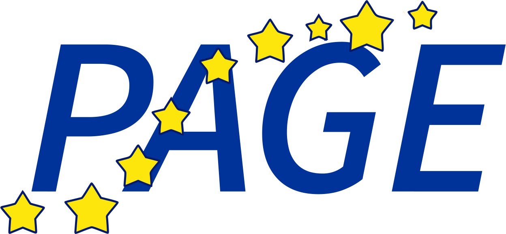

This application is a stand-alone viewer for the abstracts of the annual PAGE
meeting. Abstracts can be sorted by
Programme item, Presenter or Abstract category, and
bookmarked using the star in the upper right corner in the
abstract-view. Starred abstracts are subsequently available under the Favourites
button. Finally, the search button allows a full search of all abstract content.
The PAGE website is available at
www.page-meeting.org.
The
application was custom-designed
for Android by Maxim Schoemaker.
Information and suggestions to the current maintainer, Justin Wilkins.
Development and maintenance sponsored by
test